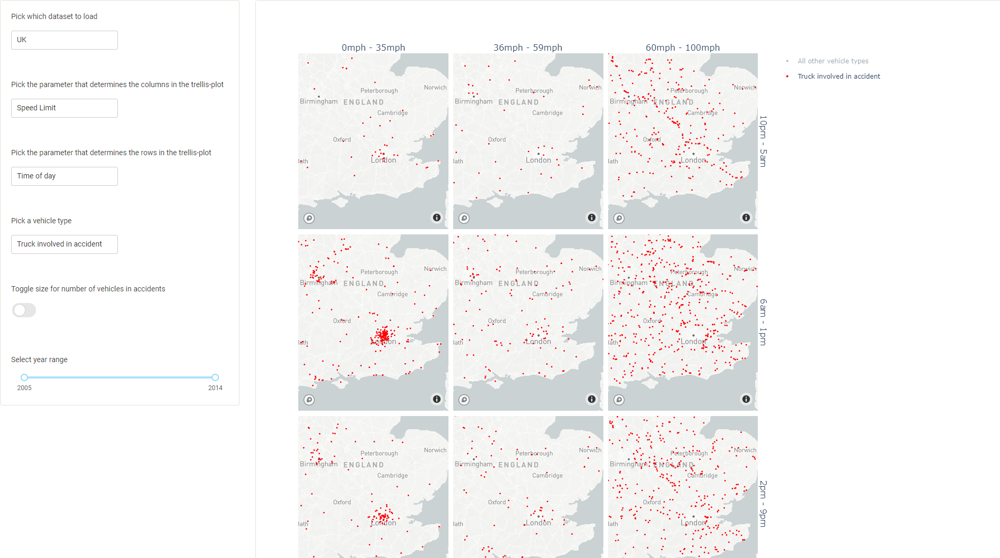
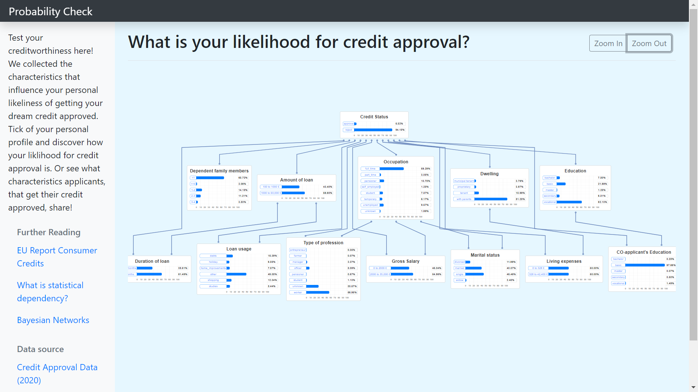

Vega-Lite Tutorial
Welcome to the tutorial on Vega-Lite - a declarative visualization grammar! Here, you can find video explaining the features of Vega-Lite, code walkthroughs for each feature and examples of visualizations.
Introduction

Data
Transforms
-
 Visualizing Citation Graphs
Visualizing Citation GraphsOur project was about identifying and visualizing the chains of citations that exist between research papers in the field of Computer Science.
-
 Visualizing Wildfires in the US
Visualizing Wildfires in the USOur project aims to show the differences between fires depending on what caused the fires. Differences in frequency, size, location and time of year can all be seen in a single interactive visualization. In particular, we focused on comparing human generated fires with lightning generated fires.
-
 Spotify Music Visualization
Spotify Music VisualizationOur project was about presenting Spotify's weekly top 200 song charts for a time span of 4 years across 60 countries. By extracting 'audio features' from Spotify's API, we could visualize patterns and trends in music around the world.
-
Road Accidents in the US and the UK
This project focuses on getting an informed and better understanding of the traffic data available to the public from the National Highway Traffic Administration and the United Kingdom Department for Transport from 2005-2015. To visualize this data, we decided to implement a dynamic trellis plot do give as much power to the user as possible. The user can select what parameter that will determine the x and y axis of the trellis plot, what vehicle type to highlight, whether the size of an accident should be visualized and what accidents in a year range within 2005-2015 should be visualized. Furthermore, the user can select a group of accidents with box selections and a more detailed bar chart will appear.
-
Interactive Bayesian Network Models
In my project I developed an interactive visualization of a Bayesian Network model explaining the relation between credit approval likelihood and the applicant’s characteristics. The tool is based on open source web technologies and the statistical developer environment R. I integrated bar plots as detailed plots within the bigger graph structure showing the conditional probabilities.
-
 Visualizing Soccer Player Stats
Visualizing Soccer Player StatsThe goal with the project was to make a scouting tool for soccer scouts and management in football clubs that allows them to make their player assessment process faster. The tool uses data from the English Premier League and combines two different plots that enables the user to find the right player.
-
 Water Flow in Aarhus
Water Flow in AarhusWe have worked to visualize complex time series data of water flow in Aarhus, with data curtesy of Aarhus Vand. We have made an application there allows Aarhus Vand to explore and combine patterns of water usage measured from different locations around Aarhus. We have used Horizon Graphs to visualize flow, and applied interactive methods to compare usage and find patterns.